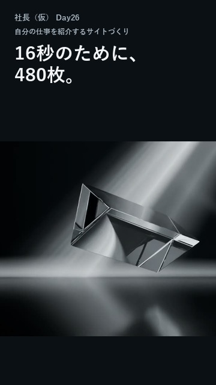
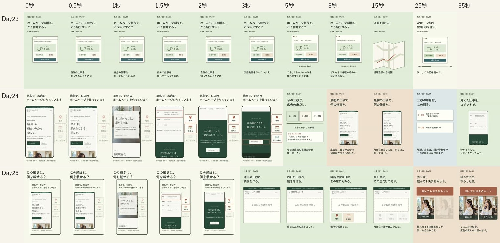
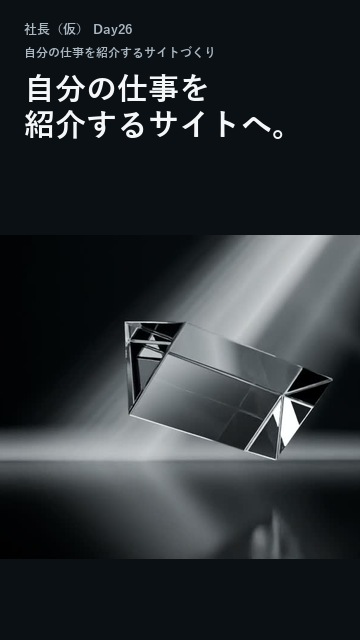
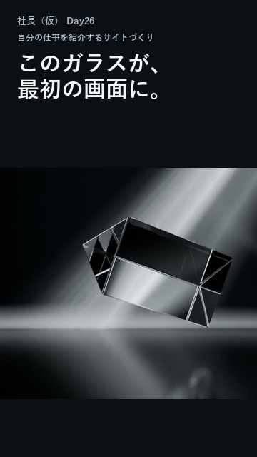
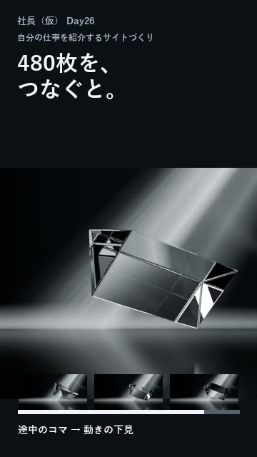
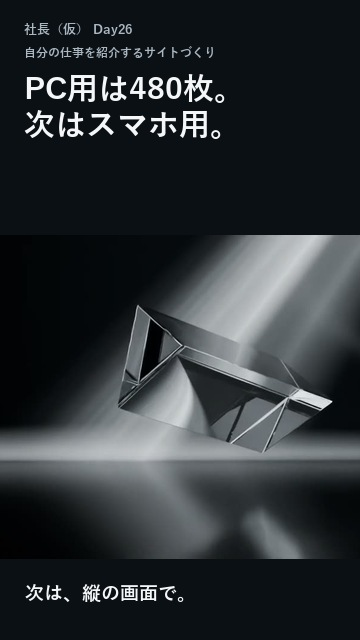

0–3秒

0秒からガラスが回る。説明の前に実物。
声：この16秒を動かすために、画像を480枚作りました。
現時点の有力な問題は、実物や見せ場より説明が長く、前の回を見ていない人には入りにくいことです。直近の再生数の弱さは確認できました。原因の確定には、最新の視聴選択率と維持率が必要です。
| 回 | 再生 | 公開情報の尺 | 公開から | 公開日時・日本時間 |
|---|---|---|---|---|
| Day25 | 170 | 58秒 | 22.7時間 | 10/18 01:17 |
| Day24 | 211 | 44秒 | 51.3時間 | 10/16 20:42 |
| Day23 | 193 | 34秒 | 74.3時間 | 10/15 21:39 |
| Day22 | 358 | 18秒 | 95.4時間 | 10/15 00:33 |
| Day21 | 142 | 29秒 | 117.6時間 | 10/14 02:25 |
| Day20 | 208 | 27秒 | 143.1時間 | 10/13 00:50 |
Day23は公開から約74時間で193回、Day24は約51時間で211回。Day25はまだ約23時間なので、48時間以上たった回と同じ条件では評価しません。9月27日の回は現在1,570回、9月28日の回は1,221回、Day15は1,199回です。ただし、公開からの累積期間が違うため、正確な落ち幅や原因の証明には使えません。
10月14日にStudioで確認した「見続けた割合」は、9月27日の伸びた回が36.7％、9月28日が36.6％。対してDay17は4.1％、Day20は10.8％、Day21は14.6％でした。Day20では89.2％がスワイプした記録です。この指標から「ちょうど1秒で離脱した」とまでは言えません。
一方、Day11は13.4％でも1,228回、Day10は5.6％でも959回ありました。視聴選択率だけで再生数は決まりません。配信量・視聴維持・視聴者層も合わせて確認します。
最新のStudioは本人のログイン待ち。Day22〜25の見続けた割合・フィード表示・維持率は未取得です。今回の接続にはMetricoolの道具がなく、Instagram・TikTokの最新実数も未取得。昔の数値を最新の数字として扱っていません。
YouTube公式の指標説明では、視聴選択率、平均視聴時間、平均再生率はそれぞれ違う指標です。平均視聴時間も、見続けた視聴を基に計算されます。

直近3本は、ページの枠・見出し・図・字幕が一度に入ります。Day25は、画面の中のスマホの中にページがあります。髪の変化が主題になるのは後からで、最初の見た目からは分かりません。字幕の言葉を削るだけでは、何の話かがさらに分かりにくくなります。先に主役を大きく見せ、声と字幕を同じ話に揃えます。
Day25の出だしは「この続きに、何を載せる？」。3.4秒からの声も「昨日の三秒の続きとして」です。前の回を見ていない人には、何を知るための動画なのかが遅れます。Day表示は残しながら、その回だけで対象と出来事が分かる出だしにします。
Day24は冒頭に実際の3秒の広告を流しています。古い比較メモの「29秒まで広告を出さない」は最新の制作ソースと一致しないため、今回の根拠から外しました。ただ、その後の約40秒は、その3秒の意図と内容の説明が中心です。
Day25の声のタイミングでは、12秒の広告本編は35.600秒から47.600秒です。出だしに前日の3秒を見せ、続けて作り方を説明し、最後に本編を見せています。これが離脱を起こしたかは維持率待ちですが、見せ場までの遠さは確認できる構造上の問題です。
Day25は髪型の手本と比較し、0秒に髪が出ない点と終わり方を「あえて違う」で通していました。Day24も、クイズの手本が最後に答えを出すのに、こちらは答えを出さずコメントで聞く構成でした。関所を通ることと、続きを見たい構造が揃うことは別です。今後は題材だけでなく、制作の過程・制約・途中の変化・見せ場が近い手本を選びます。
「短ければ伸びる」「動きを増やせば伸びる」「必ず答えを隠す」とは結論しません。Day22は約18秒で358回、Day15は約33秒で1,199回でした。次は尺の数字から決めず、一つの出来事を理解できる長さにします。
いずれも50万回超・75秒以下。自分で作品を作り、工程や時間を見せ、動いた結果を提示する形を選びました。0・0.5・1・1.5・2・3・5・8秒・最後を、Day25と並べて目視しています。
アニメ制作の挑戦3本は同じ作者です。5本を独立した成功例とは扱いません。手本の人物・キャラクター・映像は、新しい動画へ使いません。比較用のコマは手元だけに保存し、このページには元動画へのリンクを載せています。
| 見る点 | コマで確認したこと | 次の回へ反映 |
|---|---|---|
| 始まり | 制作対象や描く行為が早く映る | 0秒から自分のガラスを大きく |
| 制約 | 3本は0.5秒付近からタイマー | 16秒の動きと480枚の関係 |
| 過程 | 1枚→複数の絵→動いた結果へ進む | 静止画→途中のコマ→動き |
| 見せ場 | 制作した動きを映像で見せる | 説明中も実物、後半に動きを見せる時間 |
冒頭は本人確認済み。続く説明を修正したDay26の構成案です。本編全体は未承認・未制作。Day25の「次は自分の看板のサイト作り」という予告を受け、実際に進めている自社TOPのガラスの制作を使います。広告の説明や好みの二択は繰り返しません。
新しく伝わることは、「一枚の絵を少しずつ変えて480枚作ると、16秒の動きになる」です。Day18〜22の動きの好み・部屋・旧版比較とは、見せる作業と最後に分かることを変えます。
事実確認：下見MP4は16.000秒・30fps・480フレーム。自社素材のPC本番用もf0000〜f0479の480枚が実在しました。PC本番のMP4完成、Web実装、スマホ版完成、反応の改善は断定しません。5時間という初期の見込みは、実測の完了時間として使いません。
約36秒を目安に、合成音声・BGMなし。0秒から実物を動かし、見出しは短く、声の意味を省略せずにつなぎます。回転の素材は動きの下見を使用。コマ数の表示は実際の制作データを基にし、別の回転映像を完成品として作りません。
公開版の最後は「次のDayは、看板のサイト作り。」。制作音声の文は、53.763〜57.030秒に「次のDayは、自分の看板のサイト作りに戻ります。」です。投稿文でも同じ予告を確認しました。Day25の終盤を見る
今回の本人の返事：「まぁ始まりはよし。ただこれだけだと何の話してるん？になるのと、前回の動画の終わりで、次の動画は〜って言ってたはずだから、確認しておいて」
今回の話は、自分の仕事を紹介するサイトの最初の画面を作っている記録です。冒頭の「16秒のために、480枚」は維持します。0秒から小さく「自分の仕事を紹介するサイトづくり」と添え、冒頭のすぐ後に「何のサイトか→どこにガラスを使うか」を説明してから、480枚の作り方に進みます。
0–3秒

0秒からガラスが回る。説明の前に実物。
声：この16秒を動かすために、画像を480枚作りました。
3–12秒

Day25の予告を受けてサイト作りに戻る。何のサイトか、この回だけで説明する。
声：今日は、自分の仕事を紹介するサイト作りに戻りました。ホームページやチラシの仕事を知ってもらうためのサイトです。
12–19秒

ガラスの用途とサイトの中の場所を、コマ数の説明より先に伝える。
声：その最初の画面に、このガラスがゆっくり動く映像を入れます。
19–27秒

静止画と途中のコマから、実際の動きへ。
声：向きを少しずつ変えた画像を480枚つなぐと、こう動きます。〔続けて動きを見せる〕
27–36秒

サイト制作の今日の進み具合と、次の具体的な作業で締める。
声：パソコン用の画像は揃いました。次はスマホでも、ガラスを大きく見せられるか試します。
この流れでよければ、声の実尺に合わせて本編を作り、同秒の手本比較をもう一度行います。冒頭の主役・説明と絵の一致・見せ場の実映像・最後に分かることを確認し、スマホで再生と保存ができるリンクで渡します。
公開48時間後に、過去回と同じ経過時間の再生数、フィード表示、見続けた割合、平均再生率、3秒以降と見せ場直前の維持率を確認します。25％は既存の制作ルールにある見直しの目安であり、YouTube公式の合格点でも、再生増加の保証でもありません。